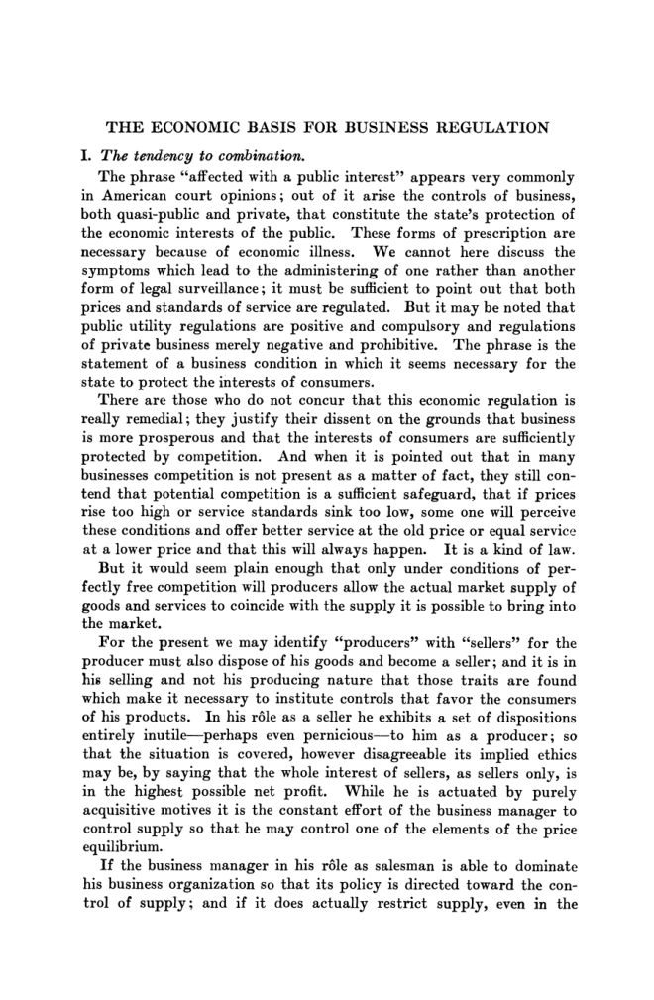

Tugwell e a teoria por trás da regulação
Leitura: 8 min
Rexford G. Tugwell sustenta que custos decrescentes, combinação de empresas e demanda inelástica dão base econômica à regulação de preços dos negócios afetados por interesse público.


Ao julgar uma lei de Nova York sobre aluguéis, no caso People ex rel. Durham Realty Corp. v. La Fetra, o juiz Pound enumerou os argumentos contrários, a começar por um: construir casas não é privilégio de monopólio. Concluiu que o legislativo constatara um estado anormal de demanda e oferta, que ninguém construía porque não compensava e que especulação e opressão se haviam generalizado; era com essa condição, e não com a teoria econômica, que o Estado tinha de lidar. Rexford G. Tugwell, da Columbia University, cita o voto para discutir uma premissa: a de que a teoria econômica estaria do lado contrário.
O artigo, publicado na American Economic Review de dezembro de 1921, sustenta que a regulação de negócios “affected with a public interest”, afetados por um interesse público, tem base na própria economia. A expressão aparece com frequência nas decisões dos tribunais americanos, e dela decorrem os controles, sobre serviços públicos e negócios privados, que protegem o interesse econômico do público. Tugwell nota a diferença entre os dois: a regulação dos serviços públicos é positiva e compulsória; a dos negócios privados, apenas negativa e proibitiva. Em ambos, regulam-se preços e padrões de serviço.
Por que o vendedor restringe a oferta?
O ponto de partida é uma distinção. Todo produtor é também vendedor, e é como vendedor, não como produtor, que exibe os traços que tornam necessário proteger o consumidor. O interesse do vendedor, enquanto vendedor, é o maior lucro líquido possível, e o meio é controlar a oferta, um dos elementos do equilíbrio de preço. Se a empresa restringe a oferta, ainda que pouco, o preço sobe e o lucro aumenta. Pode acontecer que o preço alto reduza tanto as vendas que o lucro caia; mas o simples poder de experimentar assim com o mecanismo do mercado, diz Tugwell, já indica a necessidade de controle. E a restrição pode prejudicar o público mesmo quando a empresa nada ganha com ela.
O autor apoia-se em textos correntes da profissão: Henry Clay, para quem a essência da concorrência está na posse de uma alternativa e no exercício da escolha; o manual de Ely, segundo o qual o monopolista fixa a produção no ponto de maior retorno líquido; Taussig; John Stuart Mill; e A. T. Hadley, que via o preço obtido em mercado aberto, sem fraude nem monopólio artificial, como preço justo. A questão, responde Tugwell, é de fato: existe ou não o mercado aberto? Onde a concorrência não é livre, a lei deveria levar em conta a nova situação.
Por que a combinação seria inevitável?
As empresas importantes o bastante para serem reguladas operam, por natureza, com custos decrescentes: quanto mais se usa a planta e as máquinas, menor o custo unitário. Nesses negócios, o motivo econômico se realiza melhor ampliando vendas e aceitando lucro baixo por unidade. Mas há um segundo elemento, a elasticidade da demanda. Nos bens de primeira necessidade, a demanda é muito inelástica até que as tarifas caiam bastante, quando então se amplia com força. Para quem busca só o maior retorno líquido, pode ser mais vantajoso atender a demanda inelástica dos clientes mais abastados do que baixar o preço para chamar novas camadas de consumidores.
É essa relutância, diz o autor, que justifica a regulação. O lucro total não precisa ser menor sob regulação sensata; virá de margens unitárias baixas sobre vendas grandes, e não de margens altas sobre vendas restritas. Com custos decrescentes e demanda inelástica, a combinação dos concorrentes é inevitável no longo prazo, pelas economias de escala e pelas perdas com a duplicação de plantas, e também porque dá ao administrador controle sobre o preço. O objetivo do controle não é impedir a combinação, que Tugwell considera inevitável, mas garantir que o poder assim obtido não seja usado contra quem a empresa atende.
O Estado imparcial pode ficar parado?
Da análise sai um conflito de interesses. O administrador quer o maior retorno líquido sobre o investimento; o consumidor, a difusão mais barata e ampla dos bens. Com mercado aberto e barganha livre, as duas partes ganham; quando o mercado não é aberto, uma ganha à custa da outra. Tugwell lembra que os bens de primeira necessidade compõem o ambiente em que as crianças crescem e os adultos vivem, e que a responsabilidade pelos arranjos que permitem explorar o consumidor é comum. Acrescenta que a luta por salários mais altos pouco rende ao trabalhador se o aumento for repassado aos preços por quem tem poder de monopólio.
“Para ser imparcial, neste caso, o Estado precisa agir.” (“To be impartial in this case the state must act.”)
Os controles derivados do interesse público são, nesse sentido, armas econômicas dos consumidores exercidas por meio do Estado. Há quem veja neles uma quebra de imparcialidade; Tugwell responde que essa visão confunde imparcialidade com inatividade. Os tribunais, observa, vinham transformando negócios antes privados em serviços públicos e aceitando cada vez mais a regulação por lei sob o poder de polícia.
Como reconhecer um monopólio?
A existência de monopólio não se descobre examinando cada empresa, mas o mercado inteiro: a necessidade total do bem, a oferta possível e a efetiva e o papel de cada negócio no processo. O autor imagina cinco empresas investigadas uma a uma, sem nada de irregular, num mercado em que o preço sobe de modo estranho. Uma delas pode ter oferta tão preponderante que as outras aceitem tacitamente sua liderança; pode haver um entendimento de cavalheiros, sem conspiração. Para justificar a regulação, não é preciso que o monopólio caiba numa definição: basta o efeito sobre preços e serviço. A preocupação jurídica com a empresa isolada, diz, explica parte do fracasso dos atos antitruste; a regulação deve tomar como base o bem ou serviço, e não a dissolução de empresas úteis.
A substituição não basta?
Resta o argumento de que o consumidor pode trocar um bem por outro. Tugwell admite que às vezes a troca é boa, como a da carne por alimentos mais baratos em ocupações sedentárias. Mas, quando o preço alto resulta de restrição artificial, ele não mede escassez alguma da natureza. O autor propõe três limites à substituição: a produtividade natural da região, o estado das artes industriais e a definição dos especialistas sobre o que é desejável, como leite para crianças ou espaço de ar por pessoa numa moradia. A cozinha equipada para gás e a viagem que só o trem direto faz bem são outros exemplos.
Como a comissão deve fixar o preço?
Na parte final, Tugwell descreve o trabalho do regulador. Primeiro, estimar a oferta necessária, o que, salvo se a comissão quiser impor gostos aos consumidores, significa partir do consumo passado. Depois, estudar os custos comparados e fixar um preço que cubra a despesa do produtor marginal, o menos eficiente cuja produção ainda é necessária, com a taxa corrente de lucro. Haverá lucro nas plantas mais eficientes, o excedente do produtor, que o imposto de renda pode alcançar. A comissão começa com estatísticas regulares de preços e volumes e com contabilidade uniforme; e é preferível a preços fixados em lei, porque pode revê-los quando mudam custos e hábitos.
O autor conclui que os atos Sherman e Clayton não podem ser considerados muito bem-sucedidos, que os legislativos vinham aplicando a regulação de modo fragmentado e em emergências, e que é a economia que fornece a base teórica dessas regulações: quando a concorrência não protege o comprador, o Estado não só pode como deve intervir.
Na minha leitura
Na minha leitura, o artigo desloca a pergunta da regulação do terreno jurídico para o da estrutura de custos e de demanda. Custos decrescentes explicam por que a concentração tende a ocorrer; demanda inelástica explica por que a empresa concentrada pode preferir vender pouco e caro. O critério proposto ao regulador, um preço que cubra o custo do produtor marginal e traga ao mercado a oferta necessária, é uma tentativa de reproduzir por decisão administrativa o resultado de um mercado competitivo.
O texto também deixa visíveis as exigências de informação desse programa: estimar a demanda a preços diferentes, medir custos comparados com contabilidade uniforme, lidar com custos conjuntos e rever preços com frequência. A escolha do mercado inteiro, e não da empresa isolada, como unidade de análise do poder de monopólio aponta para um problema prático de qualquer política de concorrência: definir o mercado antes de julgar a conduta.
Glossário
- Affected with a public interest
- expressão dos tribunais americanos para negócios sujeitos a regulação de preço e serviço.
- Poder de polícia (police power)
- competência do Estado para regular atividades privadas em nome do interesse público.
- Custos decrescentes
- situação em que o custo por unidade cai à medida que a produção aumenta.
- Demanda inelástica
- demanda cuja quantidade pouco reage a mudanças de preço.
- Produtor marginal
- o produtor de custo mais alto cuja produção ainda é necessária para completar a oferta.
- Excedente do produtor
- lucro obtido pelas plantas de custo menor quando o preço cobre o custo do produtor marginal.
Fontes
- The Economic Basis for Business Regulation — Rexford G. Tugwell (Columbia University) (pp. 643–658). JSTOR · Internet Archive (PDF)
- Edição completa, com os demais artigos: Nº 172 do Arquivo.
Documento em domínio público (EUA, publicado antes de 1931), via JSTOR Early Journal Content e Internet Archive. Resumo e comentário do autor deste site, sem afiliação com a American Economic Association. Encontrou um erro? Escreva: a correção é publicada no próprio texto, com data.
← Hansen e as greves ao longo do ciclo ↑ Nº 172 · Gregg, a frota do governo, os ciclos de greves e a regulação de preços